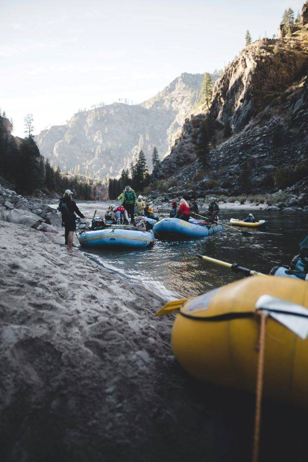

This Season's Rapids Runs
Little John
Family Fun Ride
A light-hearted adventure with milder rapids for making memories with the whole family
Ages 12+ with accompanying parent or guardian

Big Rick is the older brother of Little John. Picking up where he leaves off, we get into some real rapids here!
Ages 16+ with an accompanying parent or guardian
Big Rick
For Casual Adrenaline Junkies

El Serpiente Blanco
A Real River Rapids Run!
**For experienced white water rafters!**
This stretch of the river offers the most extreme of challenges for even seasoned veterans, come prepared!
Ages 18+ only

Little John Pack
- $90 per person
- $650 for the raft
The Little John pack is the shortest of the trips, stopping before any real rapids are encountered. Recommended for kids ages 12 and up.
Big Rick Run
- $110 per person
- $770 for the raft
The Big Rick run keeps going where the Little John would stop, getting into some fast-paced rapids!
El Serpiente Blanco Excursion
- $140 per person
- $900 for the raft
El Serpient Blanco excursion is the longest run we offer, going the full length of the canyon river and facing the most dangerous rapids along the route. Come prepared, recommended only for experienced rafters.
